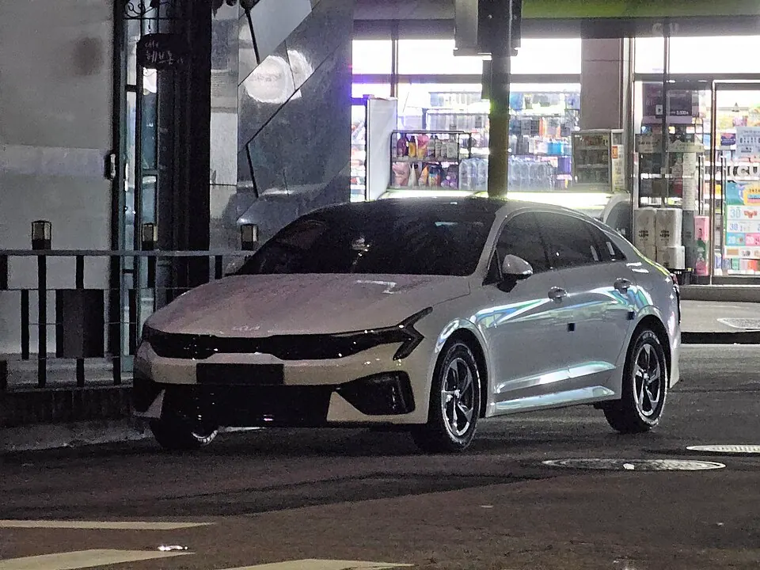

복합연비·전비
9.5–20.1 (동력별 단위 확인). 휠·구동·세부 사양이 다르면 같은 모델도 값이 달라집니다.
기아 · DL3
가솔린·하이브리드·LPG 사양을 구분해 봅니다. 16·19인치와 빌트인캠 조건이 다른 행은 별도 사양으로 유지합니다.

하이브리드는 같은 2.0 계열에서도 휠 크기에 따라 복합연비가 달라집니다. LPG는 연료 단가가 다르기 때문에 연비 숫자만으로 가솔린보다 불리하다고 단정할 수 없습니다. 막대는 동력 방식별 최고값을 표시하며, km/L와 km/kWh는 서로 비교하지 않습니다.
공식 등록 사양에서 연비와 세금 계산이 가능한 조건을 추렸습니다. 공개되지 않은 값은 비워 두었습니다.
| 공식 등록 사양 | 동력 | 복합 | 도심 | 고속 | 배기량 | 연 자동차세 | 2만km 에너지비 |
|---|---|---|---|---|---|---|---|
| K5 PE 1.6T-GDI 17인치(빌트인캠 미장착) | 휘발유 | 13.7 km/L | 12.1 | 16.1 | 1,598cc | 290,836원 | 약 2,713,547원 |
| K5(DL3) 1.6T-GDI_17인치타이어_21MY | 휘발유 | 13.6 km/L | 12.1 | 16 | — | 배기량 연결 안 됨 | 약 2,733,500원 |
| K5(DL3) 1.6T-GDI_19인치(빌트인캠) | 휘발유 | 12.6 km/L | 11.2 | 14.7 | — | 배기량 연결 안 됨 | 약 2,950,444원 |
| K5(DL3) 2.0GDI 하이브리드_16인치타이어 | 하이브리드 | 20.1 km/L | 19.9 | 20.2 | 1,999cc | 519,740원 | 약 1,849,532원 |
| K5(DL3) 2.0GDI 하이브리드_18인치타이어 | 하이브리드 | 18 km/L | 18.1 | 17.8 | 1,999cc | 519,740원 | 약 2,065,311원 |
| K5 PE 하이브리드 2.0GDI 18" | 하이브리드 | 17.1 km/L | 16.7 | 17.6 | — | 배기량 연결 안 됨 | 약 2,174,012원 |
| K5(DL3) 2.0LPI_16인치타이어 | LPG | 10.2 km/L | 9 | 12 | 1,999cc | 519,740원 | 약 2,153,255원 |
| K5(DL3) 2.0LPI_18인치(빌트인캠) | LPG | 9.6 km/L | 8.5 | 11.2 | 1,999cc | 519,740원 | 약 2,287,833원 |
| K5(DL3) PE 2.0LPI 6AT 18인치 (25MY) | LPG | 9.5 km/L | 8.2 | 11.5 | — | 배기량 연결 안 됨 | 약 2,311,916원 |
자동차세는 비영업용 승용 신차 정상세액과 지방교육세 30%를 합산했습니다. 연납·차령 경감·개별 감면은 제외합니다. 전기차 충전비는 이용 요금 차이가 커 기본값을 만들지 않습니다.
9.5–20.1 (동력별 단위 확인). 휠·구동·세부 사양이 다르면 같은 모델도 값이 달라집니다.
290,836원–519,740원. 실제 고지액은 등록 시점과 차령에 따라 달라질 수 있습니다.
내연기관은 거리 ÷ 복합연비 × 오피넷 단가로 계산합니다. 전기차는 실제 충전단가를 입력해 계산합니다.